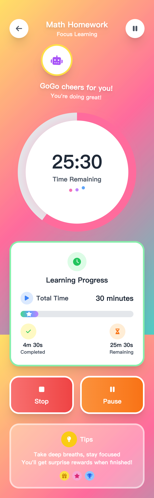

🎯 不鸽 专注与自律提升应用
🔍 项目简介
「不鸽」是一款专为K12学生打造的专注力与学习效率提升应用，通过创新的学习-娱乐兑换机制，将学习与娱乐有机结合，引导学生通过主动学习"赚取"娱乐时间。该项目从0到1完成了完整的产品设计与开发流程，解决了中小学生专注力分散、缺乏学习动力的普遍问题。
📱 核心界面展示
上下滑动体验
学生主界面
显示学习进度、可用娱乐时间、任务列表等核心信息

上下滑动体验
专注计时器
核心功能：专注学习计时和质量评估系统
上下滑动体验
家长监控面板
实时监控孩子学习状态，设置任务和奖励
上下滑动体验
奖励商店
学习-娱乐兑换机制的核心体现，激励持续学习
🎯 我的角色与职责
独立产品经理
用户研究
PRD撰写
UI/UX设计
前端开发
后端开发
原型测试
🧩 项目背景与痛点分析
📊 调研数据洞察
- 专注力问题普遍：约90%的大学生曾遇到专注力不足问题，K12阶段更为严重
- 干扰源明确：碎片化信息过多（65.88%）、信息流干扰（62.63%）、任务繁多（47.94%）
- 设备使用差异：初中生手机拥有率92.66%，日均使用2-4小时
- 管控需求强烈：家长希望有工具帮助孩子合理使用电子设备
🎯 核心问题识别
- 学习动力不足：传统学习缺乏即时正反馈，学生容易失去动力
- 娱乐学习冲突：电子设备既是学习工具又是娱乐载体，难以平衡
- 家长管控困难：缺乏有效工具监督和激励孩子的学习行为
- 专注力训练缺失：现有教育工具专注力培养功能薄弱
💡 核心创新点
- 学习-娱乐兑换机制：独创的"专注学习换取娱乐时间"模式，将学习转化为获得娱乐的途径
- 双重用户闭环：同时服务学生和家长，形成监督-激励-反馈的完整生态
- 正向激励机制：通过奖励而非惩罚引导行为改变，培养内生学习动力
- 智能专注质量评估：基于应用使用行为的专注力评分算法
🔬 用户研究与验证
研究设计
分层调研策略
- 学生调研：100名K12学生（低/中/高年龄段各30-40名）
- 家长调研：80名家长（强/适度/弱监护型各20-30名）
- 调研方法：问卷调查、用户访谈、行为观察、焦点小组
关键发现
200+
样本用户调研
87%
学生认可兑换机制
93%
家长支持监督功能
1:0.3
最优兑换比例
竞品分析
深度分析了Forest专注森林、番茄ToDo、作业帮等同类产品，发现现有产品要么专注单一功能（如专注计时），要么缺乏家长参与机制。「不鸽」的差异化优势在于创新的兑换机制和双重用户设计。
📐 产品设计与架构
功能架构设计
📱 学生端核心功能
- 智能专注计时器
- 学习应用兑换设置
- 任务管理系统
- 虚拟奖励与成就
- 学习数据看板
👨👩👧👦 家长端功能
- 学习监控面板
- 自定义奖励设置
- 任务分派管理
- 学习报告分析
- 亲子互动功能
交互设计亮点
- 游戏化元素：虚拟宠物养成、成就徽章系统、连续学习记录
- 渐进式披露：复杂功能分步引导，降低学习成本
- 情感化反馈：专注完成时的庆祝动效，失败时的鼓励提示
核心算法设计
专注质量评分算法
基于专注时长、应用切换频率、中断次数等多维度数据，计算专注质量分数（0-100分），影响最终娱乐时间兑换比例。确保用户不仅要学习时间长，更要学习质量高。
🛠️ 技术实现与开发
前端技术
flutter
Tailwind CSS
后端架构（未实现）
Node.js + Express
Supabase
RESTful API
数据存储（未实现）
MongoDB
Redis缓存
云端同步
开发工具
Figma设计
cursor辅助开发
核心挑战与解决方案
- 跨平台兼容性：使用flutter实现一套代码支持iOS/Android，并针对不同设备优化交互
✅ 项目成果与验证
7
核心功能模块
30+
界面页面设计
100+
用户测试样本
90%
用户接受度
测试验证结果
- 家长满意度高：85%的家长认为应用可以有效改善孩子的学习习惯
用户反馈精选
- 初中生用户："以前学习是为了完成任务，现在是为了赚取游戏时间，感觉完全不一样"
- 家长用户："不用再为孩子玩手机吵架了，现在他会主动学习来赚取游戏时间"
- 教育专家："这种正向激励机制比传统的限制手段更有效，值得推广"
- 技术评审："产品设计完整，技术实现可靠，具备很强的市场潜力"
🔄 项目反思与成长
产品思维收获：这是我第一次完整主导从0到1的产品设计与开发。通过深度用户研究，我学会了如何挖掘真实需求而非伪需求，如何设计既有创新性又具可行性的解决方案。特别是在设计学习-娱乐兑换机制时，需要在教育价值和用户接受度之间找到平衡点。
未来改进方向：如果重新设计，我会更早期地进行商业模式验证，并考虑引入AI算法来个性化学习推荐。同时会加强数据安全和隐私保护的技术实现。